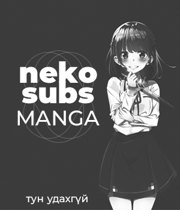

Төрөл сонгох
keyboard_arrow_down
Nekomanga (猫サブソ)

07р анги - Үхэл өөд
Цуврал Анги: 7/12
Залуу удган анх удаагаа адал явдал хайгчдын бүлгэмд элсээд, аялалд гарсан боловч тэр даруйдаа бүтэлгүйтнэ. Харин тэднийг аврах хүн нь бүх л амьдралаа гоблинуудыг устгахад зарцуулсан Гоблины Ангууч байдаг. Түүний талаар цуурхал тархах тусам түүнийг ямар ирээдүй хүлээж байгааг хэн ч мэдэхгүй...
Action,
Fantasy,
07р анги - Өсвөр насны зөрчилдөөн
Цуврал Анги: 7/13
Номын санд бүжингийн костюмтай охин байна гэдэг боломжгүй зүйл. Харин Азусагава Сакута энэ үзэгдэлтэй таарсан юм. Энгийн ч нэг бүжин охин биш, Сакутатай нэг сургуульд сурдаг телевизийн алдартай жүжигчин Сакуражима Май-сэнпай. Хүмүүс хэдэн өдрийн өмнөөс түүнийг гэнэт харж чадахааргүй болсон бөгөөд тэрбээр түүнийг нь нягталж үзэхээр номын санд ирсэн байв. Энэ нь нөгөө интернэтээр цуурхаад байгаа “Өсвөр Насны Синдром” мөн болов уу? Сакута Майтай дотносохын тулд хэргийг судлахаар шийддэг. Гэтэл хэзээ ч төсөөлөмгүй үйл явдал болно.
Comedy,
Romance,
School,
Supernatural,
Godzilla 2: Kessen Kidou Zoushoku Toshi
Цуврал Анги: 1/1
20-р зууны сүүлчийн зун... Хүн төрөлхтөн дэлхийн эзэд биш гэдгээ мэдсэн юм. Дэлхийд үл мэдэгдэх амьд биетүүд дайрч орж ирдэг бөгөөд тэднийг захирдаг нь Годзилла. Хагас зууны турш эдгээр биетүүдтэй тулалдсаны эцэст хүн төрөлхтөнүүд эх дэлхийгээсээ дүрвэхээр шийддэг. 2048 онд Засгийн Газраас хэсэг бүлэг хүмүүсийг сонгон Аратрум хэмээх сансрын хөлгөнд суулгаж 11.9 гэрлийн жилийн зайд орших Тау-э гариг руу явуулна. Өнөөх хүмүүс 20 жил аяласны эцэст Тау-э гариг дээр ирээд тэнд хүн амьдрах боломжгүйг мэддэг. Аюултай хэдий ч тэд эх дэлхийдээ эргэж ирэхээр шийдэн, эсэн мэнд эргэж ирсэн ч тэднийг төсөөлөлд ч багтамгүй дүр зураг угтана.
Action,
Adventure,
Sci-Fi,
07р анги - Галаар наадагч
Цуврал Анги: 7/24
37 настай Сатоү Миками гэх залуу нэгэн хэвийн амьдралтай ба өөрийн ертөнцдөө хутгалуулж нас барна. Хойд төрөлдөө зэргэлдээх ертөнцөд онцгой чадваруудтай Слаим болон төрснөөр түүний амьдрал орвонгоороо эргэнэ.
Fantasy,
Shounen,
03р анги - Anone 3
Драма Анги: 3/10
Гэр бүлээ алдаж өнчирч хоцорсон нэгэн охин сайн санаат хөгшин эмэгтэйтэй таарах болно. Охиныг замаа алдчихаад зовж байхад нь тэр эмэгтэй туслах болно. Тэр хоёр хоёулаа хүмүүст хууртагдаж итгэл найдвараа алдсан бөгөөд хэнд ч итгэдэггүй гэдгээрээ адилхан байв. Гэтэл гэнэтийн нэгэн ослын улмаас тэр хоёрын aмьдрал орвонгоороо эргэх болно. Цаашид юу тохиолдох бол ?
Drama,
06р анги - Алтан загас
Цуврал Анги: 6/13
Нагасакид шидтэнүүдийн үр сад 17 настай Хитоми нь бага насандаа өнгөний мэдрэмжээ алдаж, сэтгэл хөдлөлгүй болж өссөн. Түүний эмээ Кохаку бол гайхалтай шидтэн бөгөөд тэрээр Хитомиг өнгөрсөн лүү, 2018 он руу илгээнэ. Хитоми 17 настай Кохаку болон клубын найзуудтай нь цагийг өнгөрөөх болдог.
Drama,
Magic,
Romance,
18if
Цуврал Анги: 13/13
Хэрвээ та өөрийн зүүдний ертөнцдөө амьдарч хүссэн болгоноо биелүүлэх боломжтой байсан бол яах вэ? Япон даяар Нойрсож Буй Гүнжийн Синдром тархаж охид бүсгүйчүүд гүн нойронд автаж эхэлдэг бөгөөд тэдгээр охид хүн ч алах боломжтой зүүдний ертөнцийн Шулам-ууд болдог ажээ. Цүкиширо Харүто нэг л өдөр зүүдний ертөнцөд сэрж, тэдгээр шулмуудыг ч, бодит ертөнц дээрх хүмүүсийг ч бас аюулаас аврах хэрэгтэй болдог.
Mystery,
Supernatural,
06р анги - Учир нь бид сентиментал САГА
Цуврал Анги: 6/12
Энгийн л нэг өглөө. Энгийн л нэг аялгуу. Энгийн л амьдрал. Энгийн л нэг долоон охины тайван амьдрал нэг л өдөр нурж унадаг... амьд үхдлүүд болоод. Тэд хэзээ ч энэ аймшигтай зомбигийн амьдралаар амьдарна гэж төсөөлж байгаагүй. Харин одоо тэд гайхамшгийг бүтээхийн тулд “амьд гарах” шаардлагатай болно.
Comedy,
Music,
Supernatural,
06р анги - Найзуудын хагацал
Цуврал Анги: 6/21
Энэ бол Фантазиа гэх шидийн хүчээр бялхсан ертөнц. Тус хүчийг ашигладаг хүмүүс нь зөвхөн чөтгөрүүд эсвэл баатрууд. Гол дүр болох Сэт Нэмэсисийн хараалд өртсөн шидтэн. Тэрээр журамт шидтэн болон Нэмэсисийн ангууч болж чадах болов уу?
Action,
Adventure,
Fantasy,
Magic,
19р анги - Baki 19
Цуврал Анги: 19/26
Баки Ханма нь дэлхийн хамгийн хүчирхэг тулаанч Южиро Ханма буюу ааваасаа илүү хүчтэй болохоор шаргуу бэлтгэл хийнэ. Дэлхийн хамгийн аюултай, харгис хэрцгий, цаазын ялтай 5 хоригдлуудтай тэрээр нүүр тулна. Тэдний хэмжээлшгүй их хүч нь амьдрах хүслийг нь мохоосон ба мөрөөдөл нь ялагдаж үзэх. Харин Бакиг гарч ирснээр тэдний хувьд мөрөөдөл нь биелэх сүүлчийн найдвар мэт санагдана.
Action,
Martial Arts,
Shounen,
Vampire Clay
Драма Анги: 1/1
Аина Урлагийн Академийн оюутан Каори Токиод суралцаж байгаад эргэж ирдэг. Тэрээр хуучны хачирхалтай шаврын элс олж түүнийгээ баримал хийхдээ ашигласныхаа ачаар ангийхнаасаа илт сайн дүн авдаг бөгөөд ангийхан нь түүнд атаархаж эхэлнэ. Гэвч баримлууд удаа дарааллан устаж эхэлдэг бөгөөд Каоригийн ангийн хүүхэл алга болж хэрэг бишгүйднэ.
Horror,
Innocent Curse
Драма Анги: 1/1
Хүчирхийлэлд өртсөн хүүхэд алга болсны дараа удалгүй буцаж ирнэ. Түүнийг ирэхийн хамт хүчирхийлсэн этгээд 3 хоногийн дараа нууцлагаар үхнэ. Сонины сэтгүүлч Шүяа энэ хэргийг мөрдөх ба өөрийн найз Наомигийн аюулд өртөөд байгааг олж мэднэ.
Drama,
Horror,
Ju-On: The Final Curse
Драма Анги: 1/1
Хараал: Төгсгөлийн Эхлэл киноны үйл явдлын дараагаар Май бага сургуульд багш хийж байгаад сураггүй алга болсон дүү Шоно Юүйгээ хайхаар шийддэг. Удалгүй тэрээр Тэрияаки гэр бүлээс дүүдээ юу тохиолдсон талаар олж мэднэ. Май хараалыг бүрмөсөн устгахын тулд аймшигт нууцуудыг тайлж задлах хэрэгтэй болдог.
Drama,
Horror,
Cossette no Shouzou
Цуврал Анги: 3/3
Урлагийн сургуулийн оюутан Күрахаши Эири хуучин эдлэлийн дэлгүүрт цагийн ажил хийдэг. Нэг өдөр тэрээр хундаган дотор охины сүнс байгааг олж харна. Охин Эирид өөрийн амьдралаа үзүүлэх бөгөөд ачирхалтай нь Эири яагаад ч юм тэр охинд татагддаг. Охины нэрийг Коссетт гэх бөгөөд 18-р зууны амьдарч байсан Италийн язгууртны охин байлаа. Харин нэг шөнө тэр охин Эиритэй цусан гэрээ байгуулахыг шаардана...
Drama,
Horror,
Magic,
Psychological,
Romance,
Supernatural,